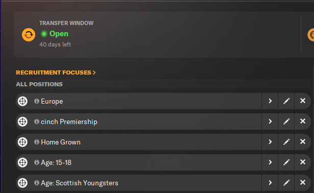

Look for the Scouting tab on the side of the screen.
Now, click on the Scouting tab.
Once you have clicked on the Scouting tab, you should see the screenshot below on that page.
On the top left, you should see 'Recruitment Focuses'. The screenshot below shows it.
Now, click on 'Recruitment Focuses'.
Once you have done that, the button in the screenshot below should appear.
Click it.
The menu in the screenshot below should appear in the middle of the screen.
Tick 'Any Position from Tactic'.
Name it something relevant to the scouting search (e.g. Age: 15-18).
For Transfer Type, select 'Transfer'.
For Minimum Current Ability, select one and a half yellow stars.
For Minimum Potential Ability, select three and a half yellow stars.
Set Age Between 15 and 18.
Set Areas to 'Any'.
Set Priority to 'Ongoing'.
Select Assigned Scouts. Untick 'Assign Any Scouts'. Highlight all scouts and click confirm.
Select Assigned Analyst. Untick 'Assign Any Analyst'. Highlight all analysts and click confirm.
Tick 'Include results from other Recruitment Focuses'.
You should end up with the screenshot below.
Now, click confirm.
That's it! Now you have set up your scouting network to find high-potential youngsters for the future.